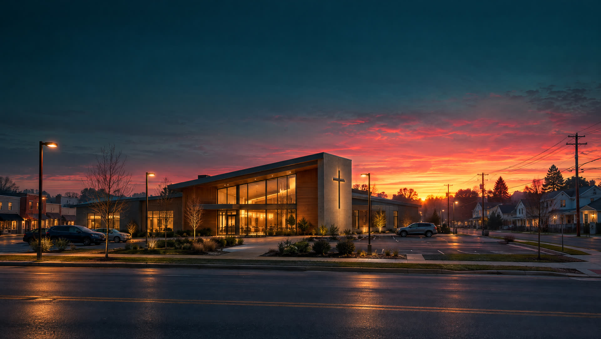

<title>Vitals for Pastors</title>
<link rel="preconnect" href="https://fonts.googleapis.com">
<link rel="preconnect" href="https://fonts.gstatic.com" crossorigin>
<link rel="stylesheet" href="https://fonts.googleapis.com/css2?family=IBM+Plex+Mono:wght@400;500&family=Schibsted+Grotesk:wght@500;700;800;900&family=Source+Serif+4:ital,opsz,wght@0,8..60,400;0,8..60,600;1,8..60,400&display=swap">
<style>
:root{
  --ground:#F3F5F4;
  --surface:#FFFFFF;
  --ink:#15232A;
  --ink-soft:#4C5B61;
  --line:#D5DCDA;
  --accent:#C21F3A;
  --accent-ink:#FFFFFF;
  --teal:#28565B;
  --grid:rgba(194,31,58,.10);
  --grid-major:rgba(194,31,58,.20);
  --monitor:#0E1A1D;
  --monitor-ink:#D9E6E3;
  --monitor-dim:#7E9894;
  --monitor-trace:#5FE3B0;
  --shadow:0 1px 2px rgba(21,35,42,.06),0 12px 32px rgba(21,35,42,.08);
  --display:"Schibsted Grotesk","Helvetica Neue",Arial,sans-serif;
  --body:"Source Serif 4",Georgia,"Times New Roman",serif;
  --mono:"IBM Plex Mono",ui-monospace,Menlo,Consolas,monospace;
}
@media (prefers-color-scheme:dark){
  :root:not([data-theme="light"]){
    color-scheme:dark;
    --ground:#0F171A;
    --surface:#172226;
    --ink:#E6ECEA;
    --ink-soft:#A3B2B0;
    --line:#2A383C;
    --accent:#F05A70;
    --accent-ink:#FFFFFF;
    --teal:#7CC0C2;
    --grid:rgba(240,90,112,.07);
    --grid-major:rgba(240,90,112,.14);
    --monitor:#081013;
    --shadow:0 1px 2px rgba(0,0,0,.3),0 12px 32px rgba(0,0,0,.35);
  }
}
:root[data-theme="dark"]{
  color-scheme:dark;
  --ground:#0F171A;
  --surface:#172226;
  --ink:#E6ECEA;
  --ink-soft:#A3B2B0;
  --line:#2A383C;
  --accent:#F05A70;
  --accent-ink:#FFFFFF;
  --teal:#7CC0C2;
  --grid:rgba(240,90,112,.07);
  --grid-major:rgba(240,90,112,.14);
  --monitor:#081013;
  --shadow:0 1px 2px rgba(0,0,0,.3),0 12px 32px rgba(0,0,0,.35);
}

*{box-sizing:border-box}
body{
  background:var(--ground);
  color:var(--ink);
  font-family:var(--body);
  font-size:18px;
  line-height:1.6;
  -webkit-font-smoothing:antialiased;
}
.wrap{max-width:1160px;margin-inline:auto;padding-inline:24px}
@media (max-width:520px){.wrap{padding-inline:16px}body{font-size:17px}}
a{color:inherit}
h1,h2,h3{font-family:var(--display);line-height:1.08;margin:0;text-wrap:balance;letter-spacing:-.02em}
h2{font-size:clamp(2rem,4.4vw,3.2rem);font-weight:800}
h3{font-size:1.25rem;font-weight:700;letter-spacing:-.01em}
p{margin:0}
.eyebrow{
  font-family:var(--mono);font-size:.75rem;letter-spacing:.14em;text-transform:uppercase;
  color:var(--accent);display:inline-flex;align-items:center;gap:.6em;
}
.eyebrow::before{content:"";width:18px;height:2px;background:currentColor}
.lede{font-size:1.2rem;color:var(--ink-soft);max-width:36em}
.btn{
  display:inline-flex;align-items:center;justify-content:center;gap:.5em;
  font-family:var(--display);font-weight:700;font-size:1rem;text-decoration:none;
  padding:.85em 1.4em;border-radius:6px;border:2px solid var(--accent);
  background:var(--accent);color:var(--accent-ink);cursor:pointer;
  transition:transform .15s ease,box-shadow .15s ease;
}
.btn:hover{transform:translateY(-1px);box-shadow:0 6px 18px rgba(194,31,58,.25)}
.btn.ghost{background:transparent;color:var(--ink);border-color:var(--line)}
.btn.ghost:hover{border-color:var(--ink);box-shadow:none}
:focus-visible{outline:3px solid var(--teal);outline-offset:3px}

/* Nav */
.nav{
  position:sticky;top:env(safe-area-inset-top,0px);z-index:20;
  background:color-mix(in srgb,var(--ground) 88%,transparent);
  backdrop-filter:blur(10px);-webkit-backdrop-filter:blur(10px);
  border-bottom:1px solid var(--line);
}
.nav .wrap{display:flex;align-items:center;justify-content:space-between;gap:16px;padding-block:14px}
.brand{display:flex;align-items:center;gap:10px;font-family:var(--display);font-weight:900;font-size:1.45rem;text-decoration:none;letter-spacing:-.03em}
.brand svg{width:34px;height:20px;flex:none}
.brand .dot{color:var(--accent)}
.nav-links{display:flex;align-items:center;gap:26px;font-family:var(--display);font-weight:500;font-size:.95rem}
.nav-links a{text-decoration:none;color:var(--ink-soft)}
.nav-links a:hover{color:var(--ink)}
.nav-links a.btn,.nav-links a.btn:hover{color:#FFFFFF}
.nav .btn{padding:.6em 1.1em;font-size:.92rem}
@media (max-width:860px){.nav-links a:not(.btn){display:none}}

/* Hero */
.hero{
  position:relative;overflow:hidden;color:#EAF1EF;
  background:
    radial-gradient(1200px 520px at 78% 18%,rgba(194,31,58,.22),transparent 60%),
    radial-gradient(900px 600px at 8% 100%,rgba(40,86,91,.45),transparent 65%),
    #0A1316;
}
.hero canvas{position:absolute;inset:0;width:100%;height:100%;display:block;pointer-events:none}
.hero .wrap{position:relative}
.hero-top{display:grid;grid-template-columns:1.15fr .85fr;gap:56px;align-items:center;padding-block:84px 0}
.hero .eyebrow{color:#FF8FA0}
.hero h1{font-size:clamp(3rem,7.6vw,6.6rem);font-weight:900;letter-spacing:-.045em;line-height:.95;margin-block:20px 24px;color:#FFFFFF}
.hero h1 em{font-style:normal;color:#FF4D66;display:block}
.hero .lede{color:#A9BDBA;max-width:34em}
.hero .actions{display:flex;flex-wrap:wrap;gap:12px;margin-top:32px}
.hero .btn{background:#E0243F;border-color:#E0243F;color:#FFFFFF}
.hero .btn.ghost{background:transparent;border-color:rgba(234,241,239,.35);color:#EAF1EF}
.hero .btn.ghost:hover{border-color:#EAF1EF}
.hero .fine{margin-top:16px;font-size:.95rem;color:#7E9894}
.hero .note{color:var(--ink);transform:rotate(1.2deg);box-shadow:0 30px 80px rgba(0,0,0,.55),0 0 0 1px rgba(255,255,255,.06)}
.trace-gap{height:190px}
.readouts{display:grid;grid-template-columns:1.6fr 1fr 1fr 1fr;border-top:1px solid rgba(234,241,239,.14);margin-bottom:0}
.ro{padding:22px 22px 30px 0;display:flex;flex-direction:column;gap:8px}
.ro + .ro{padding-left:22px;border-left:1px solid rgba(234,241,239,.14)}
.ro .lbl{font-family:var(--mono);font-size:.72rem;letter-spacing:.14em;text-transform:uppercase;color:#7E9894;display:flex;align-items:center;gap:8px}
.ro .lbl i{width:7px;height:7px;border-radius:50%;background:#5FE3B0;box-shadow:0 0 10px #5FE3B0}
.ro .val{font-family:var(--display);font-weight:900;font-size:2.6rem;line-height:1;letter-spacing:-.03em;color:#5FE3B0;font-variant-numeric:tabular-nums}
.ro .sub{font-family:var(--display);font-size:.95rem;color:#A9BDBA}
.ro.big .lbl i{background:#FF4D66;box-shadow:0 0 12px #FF4D66;animation:blip 1.2s ease-in-out infinite}
.ro.big .val{font-size:clamp(3.4rem,7vw,5.6rem);color:#FF4D66;text-shadow:0 0 28px rgba(255,77,102,.45)}
.ro.big .val small{font-size:.32em;letter-spacing:0;color:#EAF1EF;font-weight:700;margin-left:10px}
@keyframes blip{0%,100%{opacity:1}50%{opacity:.25}}
@media (prefers-reduced-motion:reduce){.ro.big .lbl i{animation:none}}
@media (max-width:900px){
  .hero-top{grid-template-columns:1fr;gap:44px;padding-block:56px 0}
  .hero .note{transform:none}
  .trace-gap{height:150px}
  .readouts{grid-template-columns:1fr 1fr}
  .ro.big{grid-column:1/-1;border-bottom:1px solid rgba(234,241,239,.14)}
  .ro + .ro{border-left:0;padding-left:0}
  .ro:nth-child(3),.ro:nth-child(4){padding-left:22px;border-left:1px solid rgba(234,241,239,.14)}
  .ro:nth-child(3){padding-left:0;border-left:0}
}
@media (max-width:420px){.ro:nth-child(4){padding-left:14px}}


/* Film: scroll-driven hero */
.film{position:relative;background:#0A1316;color:#EAF1EF}
.film.is-scrub{height:1300vh}
.film-stage{position:relative;height:min(88vh,860px);min-height:520px;overflow:hidden}
.film.is-scrub .film-stage{position:sticky;top:0;height:100vh}
.film-poster,.film-media{position:absolute;inset:0;width:100%;height:100%;object-fit:cover;transition:opacity .6s ease}
.film-media{opacity:0}
.film.is-ready .film-media{opacity:1}
.film.is-ready .film-poster{opacity:0}
.film-vignette{position:absolute;inset:0;pointer-events:none;background:
  radial-gradient(ellipse at 50% 60%,transparent 40%,rgba(10,19,22,.75) 100%),
  linear-gradient(180deg,rgba(10,19,22,.55),transparent 32%,transparent 70%,rgba(10,19,22,.85))}
.film-band{position:absolute;left:0;right:0;top:20%;text-align:center;padding-inline:24px;opacity:0;pointer-events:none;will-change:opacity,transform}
.film-band p{margin:0 auto;max-width:18ch;font-family:var(--display);font-weight:800;font-size:clamp(2.2rem,5.4vw,4.6rem);letter-spacing:-.03em;line-height:1.02;color:#FFFFFF;text-wrap:balance;text-shadow:0 2px 30px rgba(0,0,0,.6),0 0 40px rgba(255,77,102,.25)}
.film-settle{position:absolute;inset:0;display:grid;grid-template-columns:1fr 1fr;align-items:center;padding:10vh 5vw 8vh;--m:1;--d:1}
.film-lockup{grid-column:2;display:flex;flex-direction:column;gap:22px;max-width:560px}
.film.is-scrub .film-settle{pointer-events:none}
.film.is-scrub .film-settle.is-on{pointer-events:auto}
.film-mark{font-family:var(--display);font-weight:900;font-size:clamp(4rem,11vw,10rem);line-height:.85;letter-spacing:-.055em;color:#FFFFFF;
  clip-path:inset(-20% calc((1 - var(--m)) * 100%) -20% 0);opacity:calc(.2 + var(--m) * .8);
  filter:blur(calc((1 - var(--m)) * 10px));transform:translateX(calc((1 - var(--m)) * -40px));
  text-shadow:0 0 calc(var(--m) * 60px) rgba(255,77,102,.45),0 4px 40px rgba(0,0,0,.6)}
.film-mark span{color:#FF4D66}
.film-details{opacity:var(--d);transform:translateY(calc((1 - var(--d)) * 22px))}
.film-settle .eyebrow{color:#FF8FA0}
.film-settle .eyebrow::before{background:#FF8FA0}
.film-settle h1{font-size:clamp(2rem,3.6vw,3.4rem);font-weight:900;letter-spacing:-.04em;line-height:1;margin-top:12px;color:#FFFFFF;text-shadow:0 4px 40px rgba(0,0,0,.7)}
.film-settle h1 em{font-style:normal;color:#FF4D66;text-shadow:0 0 34px rgba(255,77,102,.5)}
.film-settle .actions{display:flex;flex-wrap:wrap;gap:12px;margin-top:24px}
.film-settle .btn{background:#E0243F;border-color:#E0243F;color:#FFFFFF}
.film-settle .btn.ghost{background:rgba(10,19,22,.4);border-color:rgba(234,241,239,.4);color:#EAF1EF;backdrop-filter:blur(6px);-webkit-backdrop-filter:blur(6px)}
@media (max-width:760px){
  .film-stage{height:auto;min-height:0}
  .film-poster{position:relative;height:auto;aspect-ratio:16/9;object-position:30% 50%}
  .film-settle{position:relative;display:block;padding:28px 16px 40px;background:#0A1316}
  .film-mark{font-size:clamp(3.4rem,18vw,5rem)}
}
.film-hint{position:absolute;left:50%;bottom:22px;transform:translateX(-50%);font-family:var(--mono);font-size:.7rem;letter-spacing:.3em;text-transform:uppercase;color:#7E9894;transition:opacity .4s ease}
.film:not(.is-scrub) .film-hint{display:none}
.hero h2.big{font-size:clamp(2.4rem,5vw,4.2rem);font-weight:900;letter-spacing:-.04em;line-height:1;margin-block:18px 22px;color:#FFFFFF}
.hero h2.big em{font-style:normal;color:#FF4D66}

/* AI stills with scroll movement */
.still-band{position:relative;height:clamp(320px,62vh,640px);overflow:hidden;background:#0A1316;color:#EAF1EF;display:flex;align-items:flex-end}
.still-band img,.monitor-bg img{position:absolute;left:0;top:-12%;width:100%;height:124%;object-fit:cover;will-change:transform}
.still-band::after{content:"";position:absolute;inset:0;background:linear-gradient(180deg,rgba(10,19,22,.1) 30%,rgba(10,19,22,.88))}
.still-band .wrap{position:relative;z-index:1;width:100%;padding-block:0 56px}
.still-band p{font-family:var(--display);font-weight:800;font-size:clamp(1.8rem,4vw,3.2rem);letter-spacing:-.03em;line-height:1.05;max-width:20ch;text-wrap:balance;color:#FFFFFF;text-shadow:0 2px 24px rgba(0,0,0,.6)}
.still-band small{display:block;font-family:var(--mono);font-size:.72rem;letter-spacing:.14em;text-transform:uppercase;color:#FF8FA0;margin-bottom:12px}
.monitor-sec{position:relative;overflow:hidden}
.monitor-bg{position:absolute;inset:0;opacity:.32;pointer-events:none}
.monitor-bg::after{content:"";position:absolute;inset:0;background:linear-gradient(180deg,var(--monitor),transparent 30%,transparent 70%,var(--monitor))}
.monitor-sec > .wrap{position:relative}

/* Monday note mock */
.note{
  background:var(--surface);border:1px solid var(--line);border-radius:10px;box-shadow:var(--shadow);
  font-family:var(--display);overflow:hidden;
}
.note-head{display:flex;justify-content:space-between;align-items:baseline;gap:12px;padding:16px 20px;border-bottom:1px solid var(--line)}
.note-head strong{font-size:1.05rem}
.note-head span{font-family:var(--mono);font-size:.72rem;color:var(--ink-soft);letter-spacing:.06em}
.note-sec{padding:14px 20px;border-bottom:1px solid var(--line)}
.note-sec:last-child{border-bottom:0}
.note-sec h4{margin:0 0 8px;font-family:var(--mono);font-weight:500;font-size:.7rem;letter-spacing:.14em;text-transform:uppercase;color:var(--ink-soft)}
.note-row{display:flex;justify-content:space-between;gap:12px;font-size:.95rem;padding-block:4px}
.note-row b{font-weight:700}
.note-row .tag{font-family:var(--mono);font-size:.72rem;padding:2px 8px;border-radius:99px;white-space:nowrap;align-self:center}
.tag.due{background:color-mix(in srgb,var(--accent) 14%,transparent);color:var(--accent)}
.tag.quiet{background:color-mix(in srgb,var(--teal) 16%,transparent);color:var(--teal)}
.tag.ok{background:color-mix(in srgb,var(--ink) 8%,transparent);color:var(--ink-soft)}
.note-foot{padding:10px 20px;font-family:var(--mono);font-size:.7rem;color:var(--ink-soft);background:color-mix(in srgb,var(--ground) 60%,var(--surface))}

/* AG strip */
.ag{padding-block:64px;border-bottom:1px solid var(--line)}
.ag .wrap{display:grid;grid-template-columns:.9fr 1.1fr;gap:48px;align-items:center}
.ag p.lede{margin-top:16px}
.cal{display:grid;grid-template-columns:repeat(5,1fr);gap:0;border:1px solid var(--line);border-radius:10px;overflow:hidden;background:var(--surface)}
.cal div{padding:16px 14px;border-right:1px solid var(--line);font-family:var(--display)}
.cal div:last-child{border-right:0}
.cal small{display:block;font-family:var(--mono);font-size:.68rem;letter-spacing:.1em;text-transform:uppercase;color:var(--accent);margin-bottom:6px}
.cal strong{font-size:1rem;line-height:1.2;display:block}
@media (max-width:900px){.ag .wrap{grid-template-columns:1fr}}
@media (max-width:640px){.cal{grid-template-columns:1fr 1fr}.cal div{border-bottom:1px solid var(--line)}.cal div:nth-child(2n){border-right:0}.cal div:last-child{grid-column:1/-1;border-bottom:0}}

/* Week */
.section{padding-block:88px}
.section-head{display:grid;gap:16px;max-width:760px;margin-bottom:48px}
.week{display:grid;grid-template-columns:repeat(4,1fr);border-top:2px solid var(--ink)}
.day{padding:22px 22px 0 0}
.day + .day{padding-left:22px;border-left:1px solid var(--line)}
.day .when{font-family:var(--mono);font-size:.78rem;letter-spacing:.1em;text-transform:uppercase;color:var(--accent);margin-bottom:10px}
.day h3{margin-bottom:10px}
.day p{color:var(--ink-soft);font-size:1rem}
@media (max-width:900px){.week{grid-template-columns:1fr 1fr;row-gap:28px}.day:nth-child(3){padding-left:0;border-left:0}}
@media (max-width:560px){.week{grid-template-columns:1fr}.day,.day + .day{padding-left:0;border-left:0}}

.features{display:grid;grid-template-columns:repeat(3,1fr);gap:1px;background:var(--line);border:1px solid var(--line);border-radius:10px;overflow:hidden;margin-top:64px}
.feat{background:var(--surface);padding:28px}
.feat h3{margin-bottom:10px}
.feat p{font-size:1rem;color:var(--ink-soft)}
@media (max-width:900px){.features{grid-template-columns:1fr 1fr}}
@media (max-width:600px){.features{grid-template-columns:1fr}}

/* Monitor */
.monitor-sec{background:var(--monitor);color:var(--monitor-ink);padding-block:88px}
.monitor-sec h2{color:#F4F8F7}
.monitor-sec .eyebrow{color:var(--monitor-trace)}
.monitor-sec .lede{color:var(--monitor-dim)}
.screen{margin-top:44px;display:grid;grid-template-columns:repeat(4,1fr);gap:1px;background:#1D2C30;border:1px solid #1D2C30;border-radius:10px;overflow:hidden}
.inst{background:var(--monitor);padding:22px 20px 20px;display:flex;flex-direction:column;gap:10px;min-height:180px}
.inst .top{display:flex;justify-content:space-between;align-items:baseline;font-family:var(--mono);font-size:.72rem;letter-spacing:.12em;text-transform:uppercase;color:var(--monitor-dim)}
.inst .name{font-family:var(--display);font-weight:800;font-size:1.6rem;letter-spacing:-.02em;color:#F4F8F7}
.inst .what{font-size:.98rem;color:var(--monitor-dim);line-height:1.45}
.inst .read{margin-top:auto;display:flex;align-items:flex-end;gap:12px}
.inst .num{font-family:var(--mono);font-size:1.9rem;line-height:1;color:var(--monitor-trace);font-variant-numeric:tabular-nums}
.inst .num.low{color:#FFB35C}
.inst svg{flex:1;height:30px}
.inst svg path{fill:none;stroke:var(--monitor-trace);stroke-width:1.6;opacity:.8}
.inst .num.low + svg path{stroke:#FFB35C}
.inst.legend{justify-content:center;background:#10201F}
.inst.legend p{font-size:.95rem;color:var(--monitor-dim)}
.inst.legend b{color:#F4F8F7;font-family:var(--display)}
.sample{margin-top:14px;font-family:var(--mono);font-size:.72rem;color:var(--monitor-dim);letter-spacing:.06em}
@media (max-width:900px){.screen{grid-template-columns:1fr 1fr}}
@media (max-width:520px){.screen{grid-template-columns:1fr}.inst{min-height:0}}

/* EKG private */
.ekg{display:grid;grid-template-columns:1fr 1fr;gap:56px;align-items:start}
.ekg .quote{font-size:1.35rem;line-height:1.5;border-left:3px solid var(--accent);padding-left:22px}
.ekg .ladder{margin-top:28px;display:grid;gap:10px}
.ladder div{display:flex;gap:14px;align-items:baseline;font-family:var(--display);font-size:1rem;padding:12px 16px;border:1px solid var(--line);border-radius:8px;background:var(--surface)}
.ladder span{font-family:var(--mono);font-size:.72rem;color:var(--accent);letter-spacing:.1em}
@media (max-width:900px){.ekg{grid-template-columns:1fr;gap:32px}}

/* Ask */
.ask{background:var(--surface);border-block:1px solid var(--line)}
.ask-box{margin-top:36px;max-width:780px;border:1px solid var(--line);border-radius:10px;background:var(--ground);overflow:hidden}
.ask-input{display:flex;gap:10px;padding:14px;border-bottom:1px solid var(--line);background:var(--surface)}
.ask-input input{flex:1;min-width:0;font:inherit;font-family:var(--display);font-size:1.05rem;padding:.6em .8em;border:1px solid var(--line);border-radius:6px;background:var(--ground);color:var(--ink)}
.ask-input .btn{padding:.6em 1.1em}
.chips{display:flex;flex-wrap:wrap;gap:8px;padding:14px 14px 0}
.chip{font-family:var(--display);font-size:.9rem;padding:.45em .9em;border-radius:99px;border:1px solid var(--line);background:var(--surface);color:var(--ink);cursor:pointer}
.chip:hover,.chip[aria-pressed="true"]{border-color:var(--accent);color:var(--accent)}
.answer{padding:18px 18px 20px;font-family:var(--display);font-size:1rem}
.answer .label{font-family:var(--mono);font-size:.7rem;letter-spacing:.12em;text-transform:uppercase;color:var(--ink-soft);margin-bottom:8px}
.answer ul{margin:8px 0 0;padding-left:1.1em}
.answer li{margin-block:4px}
.answer a{color:var(--accent);text-decoration-thickness:1px;text-underline-offset:3px}

/* Coaching */
.coach{display:grid;grid-template-columns:1.2fr .8fr;gap:56px;align-items:center}
.coach-card{border:1px solid var(--line);border-radius:10px;background:var(--surface);padding:28px;box-shadow:var(--shadow)}
.coach-card .big{font-family:var(--display);font-weight:900;font-size:3.4rem;letter-spacing:-.04em;line-height:1}
.coach-card p{margin-top:12px;color:var(--ink-soft);font-size:1rem}
@media (max-width:900px){.coach{grid-template-columns:1fr;gap:32px}}

/* Pricing */
.pricing{background:color-mix(in srgb,var(--teal) 6%,var(--ground));border-top:1px solid var(--line)}
.tiers{display:grid;grid-template-columns:repeat(3,1fr);gap:20px;margin-top:8px}
.tier{background:var(--surface);border:1px solid var(--line);border-radius:10px;padding:28px;display:flex;flex-direction:column;gap:18px}
.tier.mid{border-color:var(--ink);border-width:2px}
.tier .size{font-family:var(--mono);font-size:.74rem;letter-spacing:.12em;text-transform:uppercase;color:var(--ink-soft)}
.tier h3{font-size:1.5rem}
.price{font-family:var(--display);font-weight:900;font-size:3rem;letter-spacing:-.04em;line-height:1;font-variant-numeric:tabular-nums}
.price small{font-size:1rem;font-weight:500;letter-spacing:0;color:var(--ink-soft)}
.yearly{font-family:var(--display);font-size:.95rem;color:var(--ink-soft);margin-top:6px}
.tier dl{margin:0;display:grid;grid-template-columns:1fr auto;gap:8px 12px;font-family:var(--display);font-size:.95rem;border-top:1px solid var(--line);padding-top:16px}
.tier dt{color:var(--ink-soft)}
.tier dd{margin:0;font-weight:700;text-align:right;font-variant-numeric:tabular-nums}
.tier .btn{margin-top:auto}
.price-notes{margin-top:28px;display:grid;grid-template-columns:1fr 1fr;gap:20px}
.price-notes div{font-size:1rem;color:var(--ink-soft);padding:18px 20px;border:1px dashed var(--line);border-radius:10px}
.price-notes b{color:var(--ink);font-family:var(--display)}
@media (max-width:900px){.tiers{grid-template-columns:1fr}.price-notes{grid-template-columns:1fr}}

/* District */
.district{display:grid;grid-template-columns:1fr 1fr;gap:56px}
.district .facts{display:grid;gap:0;border-top:2px solid var(--ink)}
.district .fact{display:grid;grid-template-columns:120px 1fr;gap:16px;padding-block:16px;border-bottom:1px solid var(--line)}
.fact .k{font-family:var(--mono);font-size:.78rem;letter-spacing:.08em;text-transform:uppercase;color:var(--accent);padding-top:3px}
.fact .v{font-size:1rem}
@media (max-width:900px){.district{grid-template-columns:1fr;gap:32px}}
@media (max-width:480px){.district .fact{grid-template-columns:1fr;gap:4px}}

/* Letter */
.letter{border-top:1px solid var(--line);padding-block:88px}
.letter .inner{max-width:680px;margin-inline:auto}
.letter p{font-size:1.2rem;margin-bottom:1.1em}
.letter .sig{font-family:var(--display);font-weight:800;font-size:1.3rem;margin-top:28px}
.letter .sig span{display:block;font-family:var(--mono);font-weight:400;font-size:.78rem;color:var(--ink-soft);letter-spacing:.06em;margin-top:4px}
.letter .actions{display:flex;flex-wrap:wrap;gap:12px;margin-top:32px}
.letter .inner.letter-grid{max-width:1000px;display:grid;grid-template-columns:320px 1fr;gap:56px;align-items:start}
.portrait{margin:0;position:sticky;top:96px}
.portrait img{display:block;width:100%;height:auto;aspect-ratio:480/530;object-fit:cover;border-radius:10px;box-shadow:var(--shadow);outline:1px solid var(--line);outline-offset:6px}
.portrait::after{content:"";display:block;height:3px;width:56px;background:var(--accent);margin-top:18px;border-radius:2px}
@media (max-width:820px){.letter .inner.letter-grid{grid-template-columns:1fr;gap:32px}.portrait{position:static;max-width:260px}}

footer{border-top:1px solid var(--line);padding-block:28px;font-family:var(--display);font-size:.9rem;color:var(--ink-soft)}
footer .wrap{display:flex;flex-wrap:wrap;justify-content:space-between;gap:12px}
</style>

<header class="nav">
  <div class="wrap">
    <a class="brand" href="#top" aria-label="Vitals home">
      <svg viewBox="0 0 34 20" aria-hidden="true"><path d="M1 11h8l3-7 5 14 4-9 2 2h10" fill="none" stroke="var(--accent)" stroke-width="2.4" stroke-linecap="round" stroke-linejoin="round"/></svg>
      <span>Vitals<span class="dot">.</span></span>
    </a>
    <nav class="nav-links" aria-label="Main">
      <a href="#week">Your week</a>
      <a href="#health">Church health</a>
      <a href="#coaching">Coaching</a>
      <a href="#pricing">Pricing</a>
      <a href="#districts">Districts</a>
      <a class="btn" href="#pricing">Try a month</a>
    </nav>
  </div>
</header>

<main id="top">
  <section class="film" id="film" aria-label="Vitals">
    <div class="film-stage">
      
      <video id="filmVideo" class="film-media" data-src="assets/hero.mp4" data-src-webm="assets/hero.webm" muted playsinline preload="auto" aria-hidden="true"></video>
      <div class="film-vignette" aria-hidden="true"></div>
      <div class="film-band" data-from="0.03" data-to="0.20" aria-hidden="true"><p>Sunday ends.</p></div>
      <div class="film-band" data-from="0.26" data-to="0.44" aria-hidden="true"><p>Monday is already waiting.</p></div>
      <div class="film-band" data-from="0.50" data-to="0.66" aria-hidden="true"><p>Vitals keeps the heartbeat steady.</p></div>
      <div class="film-settle" id="filmSettle">
        <div class="film-lockup">
          <div class="film-mark" aria-hidden="true">Vitals<span>.</span></div>
          <div class="film-details">
            <span class="eyebrow">Church software for Assemblies of God pastors</span>
            <h1>The work that happens <em>after Sunday.</em></h1>
            <div class="actions">
              <a class="btn" href="#pricing">Try it for a month</a>
              <a class="btn ghost" href="#week">See your week in Vitals</a>
            </div>
          </div>
        </div>
      </div>
      <div class="film-hint" id="filmHint" aria-hidden="true">Scroll</div>
    </div>
  </section>

  <section class="hero">
    <canvas id="monitor" aria-hidden="true"></canvas>
    <div class="wrap">
      <div class="hero-top">
        <div>
          <span class="eyebrow">Your Monday morning</span>
          <h2 class="big">Monday, <em>already handled.</em></h2>
          <p class="lede">Sunday ends, and before you have rested there is a recap to write, a guest to call, a family in the hospital, and a sermon for next week that is still a blank page. Vitals carries the part of that load a machine can carry, so you have more of yourself for the part only you can do.</p>
          <div class="actions">
            <a class="btn" href="#pricing">Try it for a month</a>
            <a class="btn ghost" href="#week">See your week in Vitals</a>
          </div>
          <p class="fine">Built by a pastor and written in your voice. Nothing goes out until you approve it.</p>
        </div>

        <aside class="note" aria-label="Example Monday note">
          <div class="note-head">
            <strong>Your Monday note</strong>
            <span>MON 7:00 AM</span>
          </div>
          <div class="note-sec">
            <h4>Who needs a call</h4>
            <div class="note-row"><span><b>The Alvarez family</b>, hospital stay ended Friday</span><span class="tag due">Call today</span></div>
            <div class="note-row"><span><b>Ruth Ellison</b>, two weeks since her husband's funeral</span><span class="tag due">Note drafted</span></div>
          </div>
          <div class="note-sec">
            <h4>Guests gone quiet</h4>
            <div class="note-row"><span><b>Jordan and Kaylee Price</b>, first visit Aug 31</span><span class="tag quiet">No 2nd contact</span></div>
          </div>
          <div class="note-sec">
            <h4>Waiting on you</h4>
            <div class="note-row"><span>Sunday recap email, ready to review</span><span class="tag ok">Draft</span></div>
            <div class="note-row"><span>Board agenda for Thursday</span><span class="tag ok">1 item open</span></div>
            <div class="note-row"><span>Coaching action step: plan the fall series</span><span class="tag ok">From Sept call</span></div>
          </div>
          <div class="note-foot">Example note. Names are made up.</div>
        </aside>
      </div>
      <div class="trace-gap" id="trace-gap"></div>
      <div class="readouts">
        <div class="ro big">
          <span class="lbl"><i></i>Hours back each week</span>
          <span class="val">8 to 10<small>hrs</small></span>
          <span class="sub">What Vitals is built to give every pastor, estimated.</span>
        </div>
        <div class="ro">
          <span class="lbl"><i></i>Health instruments</span>
          <span class="val">7</span>
          <span class="sub">Pulse to Voice</span>
        </div>
        <div class="ro">
          <span class="lbl"><i></i>AG Sundays</span>
          <span class="val">5</span>
          <span class="sub">Already on your calendar</span>
        </div>
        <div class="ro">
          <span class="lbl"><i></i>Coaching</span>
          <span class="val">Monthly</span>
          <span class="sub">Included on every plan</span>
        </div>
      </div>
    </div>
  </section>

  <section class="ag">
    <div class="wrap">
      <div>
        <span class="eyebrow">Made for how an AG church runs</span>
        <h2 style="margin-top:14px">It already knows our calendar.</h2>
        <p class="lede">Vitals was built for Assemblies of God churches from the start. It knows our bylaws, our business meetings, our missions giving, and the Sundays we plan the whole year around.</p>
      </div>
      <div class="cal" role="list" aria-label="AG emphasis Sundays on the preaching calendar">
        <div role="listitem"><small>Spring</small><strong>Pentecost Sunday</strong></div>
        <div role="listitem"><small>Missions</small><strong>World Missions</strong></div>
        <div role="listitem"><small>Youth</small><strong>Speed the Light</strong></div>
        <div role="listitem"><small>Kids</small><strong>BGMC</strong></div>
        <div role="listitem"><small>Outreach</small><strong>Light for the Lost</strong></div>
      </div>
    </div>
  </section>

  <div class="still-band" aria-label="Monday morning">
    
    <div class="wrap">
      <small>Monday, 7:00 AM</small>
      <p>Before your coffee cools, the week is already drafted.</p>
    </div>
  </div>

  <section class="section" id="week">
    <div class="wrap">
      <div class="section-head">
        <span class="eyebrow">Your week</span>
        <h2>From the pulpit to Thursday night, in one place.</h2>
        <p class="lede">You already know the week. Here is what Vitals does with it.</p>
      </div>

      <div class="week">
        <div class="day">
          <div class="when">Before Sunday</div>
          <h3>Your preaching</h3>
          <p>Write in the sermon coach and get honest notes on clarity and application before you step into the pulpit. Open the commentary workbench, type a passage, and get background and cross-references on the spot.</p>
        </div>
        <div class="day">
          <div class="when">Sunday</div>
          <h3>Your guests</h3>
          <p>A guest fills out a connection card. Vitals sends a welcome series with a short video you recorded yourself, then follows up by text. Nobody slips away because you were busy.</p>
        </div>
        <div class="day">
          <div class="when">Monday</div>
          <h3>Your morning</h3>
          <p>The recap email, a small group guide, a week of social posts, and the bulletin text are drafted in your voice. You read it, change what you want, and approve it.</p>
        </div>
        <div class="day">
          <div class="when">Thursday</div>
          <h3>Your checklist</h3>
          <p>A Thursday note catches whatever is still missing before Sunday. A weekly report shows you how the week went.</p>
        </div>
      </div>

      <div class="features">
        <div class="feat">
          <h3>Your people</h3>
          <p>After a funeral or a hospital stay, Vitals sets up the follow-up for you with a reminder at the right time and a note drafted in your voice. Membership steps, spiritual gifts, the Sandcastles discipleship pathway, and small groups live here too.</p>
        </div>
        <div class="feat">
          <h3>The hard letters</h3>
          <p>A resignation or a discipline matter. Vitals helps you write it and flags anything that should go past a lawyer first.</p>
        </div>
        <div class="feat">
          <h3>Your board</h3>
          <p>Agendas go out with reminders. Minutes are taken and kept. Ask the bylaws helper a question and it answers from your own bylaws. Monthly financials come explained in plain English your board will actually read.</p>
        </div>
        <div class="feat">
          <h3>Your business meeting</h3>
          <p>Vitals builds the eligible voter list from your membership records, tells you when notice has to go out under your bylaws, prints the ballot, counts the quorum at the door, and drafts the minutes.</p>
        </div>
        <div class="feat">
          <h3>Your annual report</h3>
          <p>Once a month, enter attendance, conversions, water baptisms, and Spirit baptisms. In January your annual church report is waiting, already filled in and averaged correctly. Review it and submit it.</p>
        </div>
        <div class="feat">
          <h3>Your missions</h3>
          <p>Keep your missionaries in front of your people with missions videos, and get offering talks written in your own voice.</p>
        </div>
      </div>
    </div>
  </section>

  <section class="monitor-sec" id="health">
    <div class="monitor-bg" aria-hidden="true"></div>
    <div class="wrap">
      <span class="eyebrow">The health of your church</span>
      <h2 style="margin-top:14px;max-width:760px">Seven instruments. Read them like a chart.</h2>
      <p class="lede" style="margin-top:16px">Each one gives you a score and an action plan, so you know where your church is strong and where it is straining before it shows up in the attendance.</p>

      <div class="screen">
        <div class="inst">
          <div class="top"><span>Preaching</span><span>01</span></div>
          <div class="name">Pulse</div>
          <div class="what">Scored sermon feedback from your congregation and leaders.</div>
          <div class="read"><span class="num">82</span><svg viewBox="0 0 100 30" preserveAspectRatio="none"><path d="M0 22 L15 20 L30 21 L45 16 L60 17 L75 12 L100 9"/></svg></div>
        </div>
        <div class="inst">
          <div class="top"><span>Governance</span><span>02</span></div>
          <div class="name">Chart</div>
          <div class="what">How your board meets and keeps its records.</div>
          <div class="read"><span class="num">74</span><svg viewBox="0 0 100 30" preserveAspectRatio="none"><path d="M0 18 L20 17 L40 19 L60 15 L80 14 L100 13"/></svg></div>
        </div>
        <div class="inst">
          <div class="top"><span>Vision</span><span>03</span></div>
          <div class="name">Lens</div>
          <div class="what">Whether your leadership team sees the same future you do.</div>
          <div class="read"><span class="num low">58</span><svg viewBox="0 0 100 30" preserveAspectRatio="none"><path d="M0 12 L20 14 L40 13 L60 18 L80 19 L100 21"/></svg></div>
        </div>
        <div class="inst">
          <div class="top"><span>Discipleship</span><span>04</span></div>
          <div class="name">Rhythm</div>
          <div class="what">Whether people are actually growing, week over week.</div>
          <div class="read"><span class="num">69</span><svg viewBox="0 0 100 30" preserveAspectRatio="none"><path d="M0 20 L20 19 L40 17 L60 18 L80 15 L100 14"/></svg></div>
        </div>
        <div class="inst">
          <div class="top"><span>Missions</span><span>05</span></div>
          <div class="name">Lifeblood</div>
          <div class="what">How missions is woven into church life, beyond the offering.</div>
          <div class="read"><span class="num">77</span><svg viewBox="0 0 100 30" preserveAspectRatio="none"><path d="M0 19 L20 18 L40 15 L60 16 L80 12 L100 11"/></svg></div>
        </div>
        <div class="inst">
          <div class="top"><span>Structure</span><span>06</span></div>
          <div class="name">Frame</div>
          <div class="what">Your teams and roles, and who is carrying too much.</div>
          <div class="read"><span class="num low">61</span><svg viewBox="0 0 100 30" preserveAspectRatio="none"><path d="M0 14 L20 15 L40 17 L60 16 L80 18 L100 18"/></svg></div>
        </div>
        <div class="inst">
          <div class="top"><span>Communication</span><span>07</span></div>
          <div class="name">Voice</div>
          <div class="what">How clearly your church talks to its own people.</div>
          <div class="read"><span class="num">80</span><svg viewBox="0 0 100 30" preserveAspectRatio="none"><path d="M0 21 L20 18 L40 18 L60 14 L80 12 L100 10"/></svg></div>
        </div>
        <div class="inst legend">
          <p><b>Green</b> is holding steady or rising.<br><b style="color:#FFB35C">Amber</b> is where to spend this quarter.</p>
        </div>
      </div>
      <p class="sample">SAMPLE READOUT. SCORES ARE ILLUSTRATIVE.</p>
    </div>
  </section>

  <section class="section">
    <div class="wrap ekg">
      <div>
        <span class="eyebrow">Your own health</span>
        <h2 style="margin-top:14px">The EKG is for you. Nobody else sees it.</h2>
        <p class="lede" style="margin-top:16px">The EKG is a private check on how you are doing, apart from how your church is doing. Your answers stay yours. Nothing goes to your district.</p>
      </div>
      <div>
        <p class="quote">A pastor who thinks his answers could reach the office that holds his credentials softens them. A pastor who knows they are private answers honestly and gets help sooner.</p>
        <div class="ladder" aria-label="Where the EKG points you when you need help">
          <div><span>FIRST</span>The AG HelpLine</div>
          <div><span>THEN</span>Counseling and care resources beyond it</div>
        </div>
      </div>
    </div>
  </section>

  <section class="section ask">
    <div class="wrap">
      <span class="eyebrow">Ask Vitals</span>
      <h2 style="margin-top:14px;max-width:760px">Ask it the way you would ask a staff member.</h2>
      <p class="lede" style="margin-top:16px">Type a plain question and Vitals finds the answer in your own records. Care notes stay with the person who wrote them, and the EKG is never searchable.</p>

      <div class="ask-box">
        <div class="ask-input">
          <label for="ask-q" class="visually-hidden" style="position:absolute;left:-9999px">Ask Vitals a question</label>
          <input id="ask-q" type="text" value="Which August guests never got a second contact?" autocomplete="off">
          <button class="btn" id="ask-go" type="button">Ask</button>
        </div>
        <div class="chips" role="group" aria-label="Example questions">
          <button class="chip" type="button" data-q="0" aria-pressed="true">Which August guests never got a second contact?</button>
          <button class="chip" type="button" data-q="1" aria-pressed="false">When did I last preach on Romans 8?</button>
        </div>
        <div class="answer" id="ask-a" aria-live="polite"></div>
      </div>
    </div>
  </section>

  <section class="section" id="coaching">
    <div class="wrap coach">
      <div>
        <span class="eyebrow">Catalyst Coaching Network</span>
        <h2 style="margin-top:14px">Coaching every month, with pastors your size.</h2>
        <p class="lede" style="margin-top:16px">Once a month I lead a coaching session for pastors of churches your size. Send your questions ahead. After the call, the recording and your action steps are waiting in the app, and the action steps show up in your Monday note so they do not fade by Wednesday.</p>
      </div>
      <div class="coach-card">
        <div class="big">Included</div>
        <p>Every Vitals church is part of the network at no extra cost, on every plan.</p>
      </div>
    </div>
  </section>

  <section class="section pricing" id="pricing">
    <div class="wrap">
      <div class="section-head">
        <span class="eyebrow">Pricing</span>
        <h2>Priced by the size of your Sunday.</h2>
        <p class="lede">Every plan includes every feature and a seat in the coaching network. The plans differ only in staff logins and the guest texting allowance.</p>
      </div>

      <div class="tiers">
        <div class="tier">
          <div>
            <div class="size">200 and under</div>
            <h3>Foundation</h3>
          </div>
          <div>
            <div class="price">$89<small> / month</small></div>
            <div class="yearly">or $890 a year, two months free</div>
          </div>
          <dl>
            <dt>Staff logins</dt><dd>3</dd>
            <dt>Guest texts a month</dt><dd>200</dd>
            <dt>Coaching room</dt><dd>Foundation</dd>
          </dl>
          <a class="btn ghost" href="#try">Start with Foundation</a>
        </div>
        <div class="tier mid">
          <div>
            <div class="size">201 to 299</div>
            <h3>Growth</h3>
          </div>
          <div>
            <div class="price">$149<small> / month</small></div>
            <div class="yearly">or $1,490 a year, two months free</div>
          </div>
          <dl>
            <dt>Staff logins</dt><dd>8</dd>
            <dt>Guest texts a month</dt><dd>600</dd>
            <dt>Coaching room</dt><dd>Growth</dd>
          </dl>
          <a class="btn" href="#try">Start with Growth</a>
        </div>
        <div class="tier">
          <div>
            <div class="size">300 and up</div>
            <h3>Leadership</h3>
          </div>
          <div>
            <div class="price">$249<small> / month</small></div>
            <div class="yearly">or $2,490 a year, two months free</div>
          </div>
          <dl>
            <dt>Staff logins</dt><dd>Unlimited</dd>
            <dt>Guest texts a month</dt><dd>1,500</dd>
            <dt>Coaching room</dt><dd>Leadership</dd>
          </dl>
          <a class="btn ghost" href="#try">Start with Leadership</a>
        </div>
      </div>

      <div class="price-notes">
        <div><b>DCA church?</b> You get 20% off your plan. If your district has a Vitals contract, your district covers it.</div>
        <div id="try"><b>Try it for a month on your own church.</b> Vitals is built to give you back 8 to 10 hours a week. If it does not give you back real hours, cancel before the second month and you are out one month's fee.</div>
      </div>
    </div>
  </section>

  <section class="section" id="districts">
    <div class="wrap district">
      <div>
        <span class="eyebrow">For superintendents and district officers</span>
        <h2 style="margin-top:14px">Every DCA church on Vitals, one invoice.</h2>
        <p class="lede" style="margin-top:16px">By the time a DCA church shows up in the national numbers as struggling, it has usually been struggling for a year or more. Vitals gives your district a clearer picture while it still matters, and it respects your pastors while it does.</p>
        <div class="actions" style="display:flex;flex-wrap:wrap;gap:12px;margin-top:28px">
          <a class="btn" href="#letter">Ask for twenty minutes</a>
        </div>
      </div>
      <div class="facts">
        <div class="fact"><div class="k">Rate</div><div class="v">$45 per church per month, billed to the district, locked for two years. Send a spreadsheet of churches and pastors and Vitals sends each pastor an invitation.</div></div>
        <div class="fact"><div class="k">District view</div><div class="v">See which churches have claimed their account and how actively they use it. Health averages appear once five or more churches have reported. No single church's scores are ever shown.</div></div>
        <div class="fact"><div class="k">Composite</div><div class="v">A yearly report split between DCA and GCA that goes well past the annual church report. No church is named and no figure covers fewer than five churches. Giving shows as percent change, never dollars.</div></div>
        <div class="fact"><div class="k">Reports</div><div class="v">Annual church reports come in complete and on time, with a reminder before January 31.</div></div>
        <div class="fact"><div class="k">Coaching</div><div class="v">Every DCA pastor joins the coaching network, and a contracted district gets a room of its own.</div></div>
      </div>
    </div>
  </section>

  <div class="still-band" aria-label="A church at first light">
    
    <div class="wrap">
      <small>Why it exists</small>
      <p>Built by a pastor for the church you already love.</p>
    </div>
  </div>

  <section class="letter" id="letter">
    <div class="wrap">
      <div class="inner letter-grid">
        <figure class="portrait">
          
        </figure>
        <div>
          <span class="eyebrow">Why I built it</span>
          <p style="margin-top:22px">I have pastored for more than 30 years and served as a District Superintendent. Today I lead in Christian higher education, and I have spent my life and ministry researching and leading church revitalization.</p>
          <p>Vitals was born out of my doctoral research and out of years leading churches of fewer than 100 people and churches of more than 3,000. I started pastoring at twenty-two without knowing what I was getting into. Most of the work after Sunday never got done well, because it all landed on the same person. I watched good churches drift for a year before anyone noticed.</p>
          <p>Vitals is my answer to that. It does the drafting and the remembering so you can do the shepherding. If you want to see it running on a real church, I will walk you through it myself.</p>
          <div class="sig">Mark Merrill, DMin<span>Founder, Vitals. Author of Vital Signs.</span></div>
          <div class="actions">
            <a class="btn" href="#pricing">Try it for a month</a>
            <a class="btn ghost" href="https://vital-church-life-resource.base44.app" target="_blank" rel="noopener">Sign in</a>
          </div>
        </div>
      </div>
    </div>
  </section>
</main>

<footer>
  <div class="wrap">
    <span>Vitals. Church software for Assemblies of God pastors.</span>
    <span>vitals-church.com</span>
  </div>
</footer>

<script>
(function(){
  // Heart monitor across the hero: ECG paper plus a sweeping trace.
  var cv = document.getElementById("monitor");
  var hero = cv.parentNode;
  var gap = document.getElementById("trace-gap");
  var ctx = cv.getContext("2d");
  var reduce = window.matchMedia && window.matchMedia("(prefers-reduced-motion: reduce)").matches;
  var W = 0, H = 0, base = 0, amp = 0, dpr = 1;

  function beatY(x){
    var period = 260, t = ((x % period) + period) % period;
    if (t < 60) return 0;
    if (t < 84) return -0.12 * Math.sin((t - 60) / 24 * Math.PI);
    if (t < 100) return 0;
    if (t < 106) return 0.10 * (t - 100) / 6;
    if (t < 114) return 0.10 - 1.10 * (t - 106) / 8;
    if (t < 124) return -1.0 + 1.45 * (t - 114) / 10;
    if (t < 132) return 0.45 - 0.45 * (t - 124) / 8;
    if (t < 156) return 0;
    if (t < 196) return -0.22 * Math.sin((t - 156) / 40 * Math.PI);
    return 0;
  }
  function size(){
    dpr = Math.min(window.devicePixelRatio || 1, 2);
    W = hero.clientWidth; H = hero.clientHeight;
    cv.width = W * dpr; cv.height = H * dpr;
    ctx.setTransform(dpr, 0, 0, dpr, 0, 0);
    var hr = hero.getBoundingClientRect(), gr = gap.getBoundingClientRect();
    base = gr.top - hr.top + gr.height * 0.62;
    amp = Math.min(gr.height * 0.62, 120);
  }
  function grid(){
    ctx.clearRect(0, 0, W, H);
    for (var x = 0; x < W; x += 20){
      ctx.strokeStyle = x % 100 === 0 ? "rgba(255,77,102,.10)" : "rgba(255,77,102,.045)";
      ctx.beginPath(); ctx.moveTo(x + .5, 0); ctx.lineTo(x + .5, H); ctx.stroke();
    }
    for (var y = 0; y < H; y += 20){
      ctx.strokeStyle = y % 100 === 0 ? "rgba(255,77,102,.10)" : "rgba(255,77,102,.045)";
      ctx.beginPath(); ctx.moveTo(0, y + .5); ctx.lineTo(W, y + .5); ctx.stroke();
    }
  }
  function path(x0, x1){
    ctx.beginPath();
    for (var x = x0; x <= x1; x += 1.5){
      var y = base + beatY(x) * amp;
      if (x === x0) ctx.moveTo(x, y); else ctx.lineTo(x, y);
    }
  }
  function draw(head){
    grid();
    ctx.lineJoin = "round"; ctx.lineCap = "round";
    // older trace, dim, with a clear gap ahead of the pen
    ctx.strokeStyle = "rgba(255,77,102,.28)"; ctx.lineWidth = 2;
    if (head === null){ path(0, W); ctx.stroke(); }
    else {
      if (head + 60 < W){ path(head + 60, W); ctx.stroke(); }
      // fresh trace, bright with glow
      var tail = Math.max(0, head - W * 0.9);
      var g = ctx.createLinearGradient(tail, 0, head, 0);
      g.addColorStop(0, "rgba(255,77,102,.25)"); g.addColorStop(1, "rgba(255,90,115,1)");
      ctx.strokeStyle = g; ctx.lineWidth = 3;
      ctx.shadowColor = "rgba(255,77,102,.8)"; ctx.shadowBlur = 14;
      path(tail, head); ctx.stroke();
      ctx.shadowBlur = 0;
      var hy = base + beatY(head) * amp;
      ctx.fillStyle = "#FFFFFF"; ctx.shadowColor = "#FF4D66"; ctx.shadowBlur = 22;
      ctx.beginPath(); ctx.arc(head, hy, 4, 0, Math.PI * 2); ctx.fill();
      ctx.shadowBlur = 0;
    }
  }
  size();
  window.addEventListener("resize", function(){ size(); if (reduce) draw(null); });
  if (reduce){ draw(null); }
  else {
    var t0 = null, speed = 260; // px per second
    (function frame(t){
      if (t0 === null) t0 = t - (W * 0.7 / speed) * 1000;
      var head = ((t - t0) / 1000 * speed) % (W + 60);
      draw(head);
      requestAnimationFrame(frame);
    })(performance.now());
  }

  // Ask Vitals example answers.
  var answers = [
    '<div class="label">Example answer</div>Four guests from August have only had the first welcome email:<ul><li><a href="#ask">Jordan and Kaylee Price</a>, first visit Aug 31</li><li><a href="#ask">Marcus Hill</a>, first visit Aug 17</li><li><a href="#ask">The Nguyen family</a>, first visit Aug 10</li><li><a href="#ask">Dana Brooks</a>, first visit Aug 3</li></ul>',
    '<div class="label">Example answer</div>You last preached Romans 8:28 to 39 on <a href="#ask">March 9, 2025</a>, in the series "No Condemnation." Before that, Romans 8:1 to 11 in October 2023.'
  ];
  var q = document.getElementById("ask-q");
  var a = document.getElementById("ask-a");
  var chips = document.querySelectorAll(".chip");
  function show(i){
    a.innerHTML = answers[i];
    chips.forEach(function(c){ c.setAttribute("aria-pressed", c.dataset.q == i ? "true" : "false"); });
  }
  chips.forEach(function(c){
    c.addEventListener("click", function(){ q.value = c.textContent; show(+c.dataset.q); });
  });
  document.getElementById("ask-go").addEventListener("click", function(){
    var v = q.value.toLowerCase();
    if (v.indexOf("romans") > -1 || v.indexOf("preach") > -1) show(1);
    else if (v.indexOf("guest") > -1) show(0);
    else a.innerHTML = '<div class="label">Example</div>This demo answers the two sample questions above. In Vitals, Ask searches your sermons, guests, care, minutes, and membership.';
  });
  q.addEventListener("keydown", function(e){ if (e.key === "Enter") document.getElementById("ask-go").click(); });
  show(0);
})();
</script>

<script>
(function(){
  // Scroll-driven hero film. Plays forward as you scroll down and backward
  // as you scroll up. Falls back to the still frame on phones, under reduced
  // motion, or whenever the video cannot load. The page is complete either way.
  var film = document.getElementById("film");
  var video = document.getElementById("filmVideo");
  var poster = document.getElementById("filmPoster");
  var settle = document.getElementById("filmSettle");
  var hint = document.getElementById("filmHint");
  if (!film || !video) return;
  var bands = [].slice.call(film.querySelectorAll(".film-band")).map(function(el){
    return { el: el, from: +el.dataset.from, to: +el.dataset.to, key: -1 };
  });
  var reduce = window.matchMedia("(prefers-reduced-motion: reduce)").matches;
  var small = window.matchMedia("(max-width: 760px)").matches;

  function staticHero(){
    film.classList.remove("is-scrub", "is-ready");
    if (video.parentNode) video.remove();
    if (poster && poster.dataset.end) poster.src = poster.dataset.end;
  }
  if (reduce || small || location.protocol === "file:" || !("fetch" in window)) { staticHero(); return; }

  if (poster){ poster.dataset.end = poster.getAttribute("src"); poster.src = poster.dataset.start; }
  film.classList.add("is-scrub");

  var dur = 0, shown = 0, target = 0, running = false, lastSettle = -1;
  function progress(){
    var r = film.getBoundingClientRect();
    var span = film.offsetHeight - window.innerHeight;
    return span > 0 ? Math.min(1, Math.max(0, -r.top / span)) : 0;
  }
  function ease(x){ return x * x * (3 - 2 * x); }
  function paintText(p){
    for (var i = 0; i < bands.length; i++){
      var b = bands[i], mid = (b.from + b.to) / 2, half = (b.to - b.from) / 2 + 0.04;
      var d = Math.abs(p - mid), o = d >= half ? 0 : 1 - Math.pow(d / half, 2.4);
      var k = Math.round(o * 50);
      if (k !== b.key){
        b.key = k;
        b.el.style.opacity = o.toFixed(3);
        b.el.style.transform = "translateY(" + ((p - mid) * -120).toFixed(1) + "px)";
      }
    }
    var m = ease(Math.min(1, Math.max(0, (p - 0.72) / 0.12)));
    var d = ease(Math.min(1, Math.max(0, (p - 0.85) / 0.10)));
    var sk = Math.round(m * 50) * 100 + Math.round(d * 50);
    if (sk !== lastSettle){
      lastSettle = sk;
      settle.style.setProperty("--m", m.toFixed(3));
      settle.style.setProperty("--d", d.toFixed(3));
      settle.classList.toggle("is-on", d > 0.5);
      if (hint) hint.style.opacity = p > 0.04 ? "0" : "1";
    }
  }
  function loop(){
    shown += (target - shown) * 0.06;
    if (Math.abs(target - shown) < 0.004) shown = target;
    if (dur && !video.seeking && Math.abs(video.currentTime - shown) > 0.016) video.currentTime = shown;
    if (shown !== target || video.seeking){ requestAnimationFrame(loop); } else { running = false; }
  }
  function onScroll(){
    var p = progress();
    paintText(p);
    if (dur){
      target = Math.min(dur - 0.05, (p / 0.9) * dur);
      if (!running){ running = true; requestAnimationFrame(loop); }
    }
  }
  window.addEventListener("scroll", onScroll, { passive: true });
  window.addEventListener("resize", onScroll);
  onScroll();

  video.addEventListener("error", staticHero);
  var mp4ok = video.canPlayType('video/mp4; codecs="avc1.42E01E"');
  var webmok = video.canPlayType('video/webm; codecs="vp9"');
  var srcUrl = mp4ok ? video.dataset.src : (webmok ? video.dataset.srcWebm : null);
  if (!srcUrl) { staticHero(); return; }
  fetch(srcUrl)
    .then(function(r){ if (!r.ok) throw new Error(r.status); return r.blob(); })
    .then(function(blob){
      video.src = URL.createObjectURL(blob);
      video.load();
      return new Promise(function(res, rej){
        video.addEventListener("loadeddata", res, { once: true });
        video.addEventListener("error", rej, { once: true });
      });
    })
    .then(function(){ dur = video.duration || 6; film.classList.add("is-ready"); onScroll(); })
    .catch(staticHero);
})();

(function(){
  // Slow drift on the generated stills as they pass through the window.
  var els = [].slice.call(document.querySelectorAll("img.parallax"));
  if (!els.length || window.matchMedia("(prefers-reduced-motion: reduce)").matches) return;
  var ticking = false;
  function update(){
    ticking = false;
    var vh = window.innerHeight;
    els.forEach(function(img){
      if (!img.isConnected) return;
      var r = img.parentNode.getBoundingClientRect();
      if (r.bottom < -200 || r.top > vh + 200) return;
      var off = (r.top + r.height / 2 - vh / 2) * -(+img.dataset.speed || 0.15);
      var scale = 1.04 + Math.min(0.08, Math.abs(r.top + r.height / 2 - vh / 2) / vh * 0.08);
      img.style.transform = "translate3d(0," + off.toFixed(1) + "px,0) scale(" + scale.toFixed(3) + ")";
    });
  }
  window.addEventListener("scroll", function(){ if (!ticking){ ticking = true; requestAnimationFrame(update); } }, { passive: true });
  update();
})();
</script>
